在乐队开始演奏之前，音乐家会进行调音以确保他们所有的音符悦耳和谐。而这在数学上是不可能的。让我们看看为什么。
整数可以很好地进行加、减、乘的基本运算。给定两个整数，任何这些运算的结果也是一个整数。但是，两个整数相除的结果可能是非整数。
除以零是不可能的，这里我们指的是类似7÷5这样的运算。
有理数这个词来源于“比率（ratio）”一词，并不是对其理智的价值判断。
通过整数相除而创建的数字被我们称为有理数（rational numbers）。例如，1.5是有理数，因为它等于3÷2。
整数3是有理数，因为3=3÷1（它也等于6÷2，12÷4，等等）。所有的整数都是有理数。
鉴于整数可以与三种基本运算“很好地结合”，而有理数可以与所有四种运算完全兼容。给定两个有理数，则它们的和、差、积和商都是有理数（与通常的警告一样，除以0是被禁止的）。
对于日常使用来说，有理数完全足够。我们测量的所有数量——如重量、体积、距离、价格、温度、时间、人口、无线电频率等——都可以使用有理数来精确说明。
既然有理数对于所有的实际工作都足够，并且与基本数学运算完全兼容，为什么我们还需要其他的数字呢？
还是先让我们来问一个更基本的问题：还有其他的数字吗？
一个正方形的对角距离有多远？在之后的第14章中我们将解决这个问题。但是现在，我们只要简单地说一个面积为1×1的正方形的对角线长度是
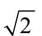
就足够了。这里对平方根的意义做一个快速介绍。9的平方根是3，因为3×3=9严格来讲，此处的平方根指的是算数平方根，因为-3也是9的平方根。算数平方根的表达式为：
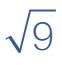
= 3。一般来说，对于一个数N，N的平方根是当与自身相乘（求平方值）能得出N的数值。在代数上，a=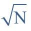
含义是a2=a×a =N。数字
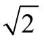
的属性是，如果自身相乘（即，如果求它的平方值），那么所得结果是2。你可以在大多数计算器上计算它的值，但是让我们看看是否能用一些简单的计算确定它的值。首先要注意的是，如果我们求零的平方值，则02=0，如果求1的平方值，则12=1。这些结果都比我们的目标2要小。另一方面，如果我们求2的平方值，则22=4，如果求3的平方值，则32=9，以此类推，这些结果都大于我们设定的目标。
由于12太小，而22太大，所以
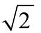
的值必须大于1且小于2。我们以0.1为增量查看1和2之间的值，如图表所示。我们发现1.4太小，不能成为2的平方根，而1.5太大。所以
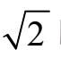
的值必须在这两者之间。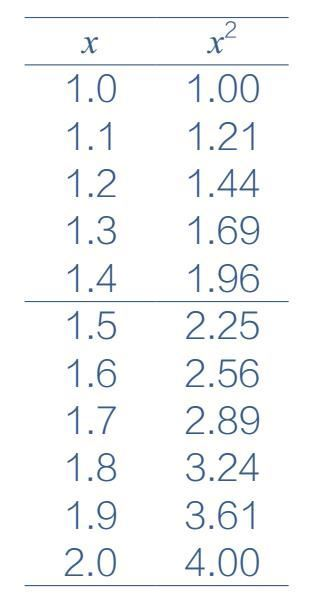
让我们进一步精确。如果我们以0.01的增量将介于1.4和1.5之间的数字进行平方，就可以找到：
1.412=1.9881和1.422=2.0164，从中我们可以得出结论1.41＜
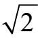
＜1.42。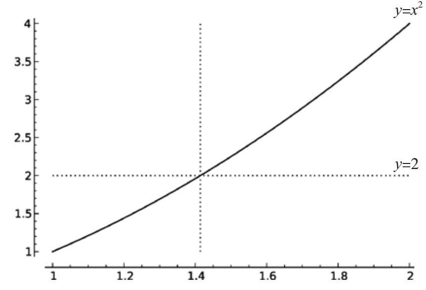
我们可以通过绘制方程y=x2的图形来估算
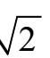
的值，并找出该曲线与从y=2引出的线相交的位置。从图中可以看出，相交点位于当x仅略大于1.4时。我们可以重复这个过程，不断将
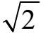
的值缩小在更小的值域内。在某些时刻，我们可能是满意的（因为我们已经得到
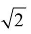
非常精确的近似值），也可能会感到沮丧（因为我们还没有精确找出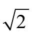
的值）。但我们所指的精确究竟是什么意思呢？
“精确”的合理概念是能够将数量明确为有理数，即两个整数的比率。如果我们可以将
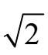
表示为分数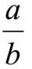
，其中a和b是整数，那么我们可以理直气壮地说我们已经找到了它的确切值。不幸的是，这是不可能的，如同我们将要证明的那样。
定理： 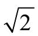
对于
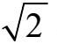
不是有理数的证明，可以使用第1章中使用的表明质数是无限多的相同的反证法。假设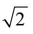
是一个有理数，由此导致得出谬论。推论：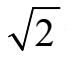
是有理数的假设是不成立的，因此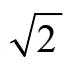
不是一个有理数。让我们直接采用这种方法。假设
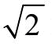
是一个有理数。这意味着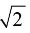
是两个正整数之比，我们称它们为a和b。于是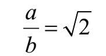
我们可以假设a和b都是正整数，因为
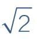
是一个正数。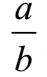
是2的平方根意味着如果我们求这个数的平方，结果将等于2。用符号表示为：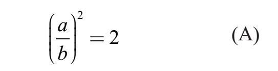
分数的乘法很简单，只要将分子和分母与其自身相乘，得：
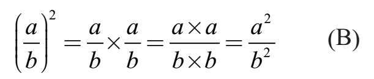
等式（A）和（B）联立得：
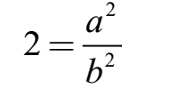
可以改写为：
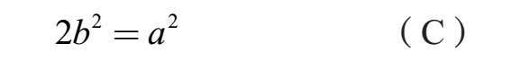
我们来考察方程（C）的两边。由于a是一个正整数，我们可以将a因数分解为质数（参见之前的算术基本定理）。
假设：
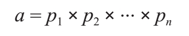
其中p1、p2，以及后面的数都是质数。
同样，b也是一个正整数，所以它可以被分解成这样：
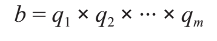
其中q1、q2，以及后面的数都是质数。
等式（C）的左边可以被改写为：
2b2 = 2×(q1×q2×···×qm)2
= 2×(q1×q1)×(q2×q2)×···×(qm×qm)
注意这表示整数2b2是由数量为奇数的质数所产生的。
同样，等式（C）的右边可以写为：
a2 = (p1×p2×···×pn)2
= (p1×p1)×(p2×p2)×···×(pn×pn)
注意，这会将整数a2分解为数量为偶数的质数。
现在关键的地方出现了：数字2b2和a2是相等的——也就是方程式（C）所表达的。我们已经证明了这个整数（无论它的值是多少）的一种因数分解结果是奇数个质数，另一种因数分解则是偶数个质数。这是不可能的，因为根据算术基本定理，将正整数分解为质数的方法是唯一的。
我们已经推出了不可能的结果。而这个矛盾的根本原因在于我们所做的
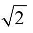
是有理数的假设。既然这个假设导致了谬论，那一定是错的。因此，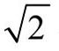
不是一个有理数。既然
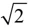
不是一个有理数，我们则说它是无理的。有理数足够用于确定我们可能考虑的物理性的数量，但是它们并不能捕获所有数学范畴里的数量。面积为1×1正方形的对角线的长度不是有理数。从数字1开始，反复使用加法、减法和乘法进行运算，我们可以创建出任何整数，并且只创建出整数。如果我们加入除法，那么则可以创造一切可能的有理数（且只有有理数）。
我们所学到的是，当我们加入平方根操作时，我们得到的数字不是简单的整数比率。当我们构建讨厌的表达式，比如
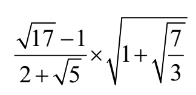
在本章中，我们只考虑非负数的平方根。在第5章中，我们会探讨将平方根运算应用于负数的结果。
我们不期望结果会是一个有理数。
当然，有时候结果可能是一个有理数，例如，
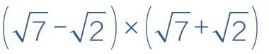
等于5。为我们以这种方式建立的数字命名是简便的：我们说一个数是可构造的（constructible），意味着它可以从数字1开始计算，并且运用于我们经常选择的五种运算：+，–，×，÷和
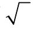
中进行构造，但是一般来说，我们不会除以0，并且不会取一个负数的平方根。这自然导致了下面这个问题：所有的数字都是构造数吗？
古希腊人看到了几何和数字之间亲密并美丽的联系。这个联系的建立使用了两个工具：直尺（没有标记的尺子）和圆规。那么使用一个单位长度（即一个长度等于1的线段），我们还可以使用直尺和圆规构建哪些其他的长度？
描述如何使用构造工具进行加减运算并不困难。假设有两条长度分别为a和b的线段b，我们在一条直线上用直尺画一条长度为a的线段。然后，打开圆规，其打开的长度等同于第二条线段，我们将圆规的圆心放在第一条线段一端，然后用圆规的铅笔端在另一端的直线上做出标记，从圆心到标记的距离就是b。我们刚刚创建的组合线段的长度就是a+b。相反，减法是通过缩短而不是延长一条线段来实现的。
二等分角（bisection）问题更容易。用直尺和圆规找到将角度分成两个相等部分的射线并不困难。
尽管数学家在一个多世纪以来认识到用直尺和圆规将一个角三等分是不可能的，但是发烧友们仍然不断地为这个问题提出“解决方案”。他们的一些聪明尝试被记录在下面这本书里：安德伍德·达德利（Underuood Dudley），《三等分的预算》［（A Budget of Trisections），斯普林格（Springer），1978］。
其他使用直尺和圆规进行的运算要复杂得多，但事实上，通过这些工具，我们还可以进行乘法、除法以及取平方根的计算。
事实上，我们用直尺和圆规画出的长度恰恰是（非负的）构造数！
过去，古希腊人曾相信所有的数字都是有理数，但是毕达哥拉斯学派计算出的结果证明并非如此。
尽管如此，希腊人依然坚持他们在几何与数字的关联上所抱持的美学信念：所有的长度——所有（正）数——都可以用直尺和圆规来构造。
这一信念直接关系到希腊三大著名构造问题。其中最为人所知的是三等分角问题（angle trisection problem）：已知一个角度，使用构造工具将这个角分成三个相等的部分。
没有那么出名，但也在此讨论范围之内的难题是：
●开三次方。给定一个正方体的棱长，构造出一个长度，使以此为棱长的正方体体积为给定正方体的2倍。
由于给定了单位长度的线段，所以这个问题相当于构造长度为
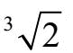
的线段。●化圆成方。给定一个圆，构造一个与圆相同面积的正方形。
同样，由于给定了单位长度，可以构造一个面积为π的圆（参见第6章）。
●化圆成方相当于构造长度为
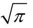
的线段。这些问题大概花费了两个世纪才得以解决。
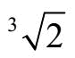
和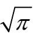
都是不规矩数。类似地，三等分角问题的解决方案也涉及了具体的不规矩数（20°的余弦）。皮埃尔·旺泽尔在1837年证明，这三个数字是不规矩的。这意味着三个古典建筑问题都是不可能的。换句话说，旺泽尔解决了三等分角的问题：他证明了三等分的构建方法是不存在的。
不规矩数的存在打破了希腊人追求用直尺和圆规打造出几何与数字间联系的期望。
当音乐家演奏彼此音调不一致的乐器时，会导致不和谐音——悦耳的音乐听起来“没有”了。
如果两个表演者弹奏相同的音符，他们的乐器产生的频率应该是相同的。差异会烦扰听众。音乐家经常演奏不同的音符，当音符和谐时，音乐最动人。是什么创造了和谐？什么声音是悦耳的？
希腊人考虑过这个问题，他们发现频率为小的整数比（例如3∶2）的音符令人愉悦。在此基础上，他们发明了音阶（归功于毕达哥拉斯）。在计算音符的频率时，有一个首要的约束：相隔一个完整八度的音符的频率比正好是2∶1。为了创造和谐的声音，希腊人还希望C和F之间以及C和G之间的频率比用小整数表示。在他们的解决方案中，对于全音阶（例如从C到D），相邻音符的频率比是
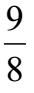
，或者对于半音阶（例如从E到F ），音符频率的比是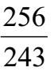
。这就是完整的毕达哥拉斯音阶：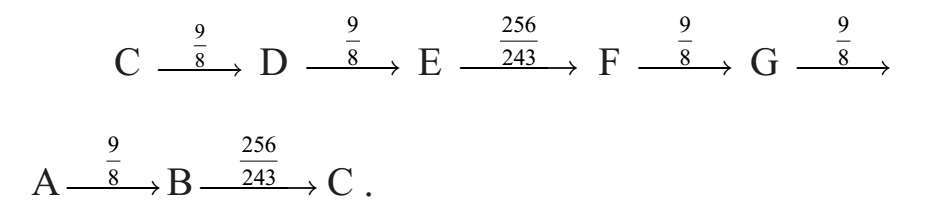
符号
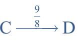
代表D的频率比C的频率高倍。由此我们可以计算音符C和F的相对频率。为了得到F的频率，我们将C的频率乘以
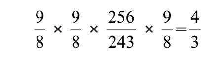
4∶3的频率比听起来不错。
在这个调谐系统中，当C和F一起演奏时，我们可以看到波形。声音看起来像这样：
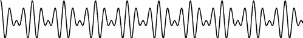
但是，当将F调得稍高一点时，波形如下所示：
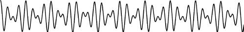
你的眼睛注意到的不同，在你耳边同样清晰可辨。你感受到了不和谐。
毕达哥拉斯音阶的一个弱点是无处不在的C大调和弦，C–E–G是不和谐的。频率比并不简单。
几个世纪以来，替代调音得到发展。例如，在纯律中，使用以下比率：
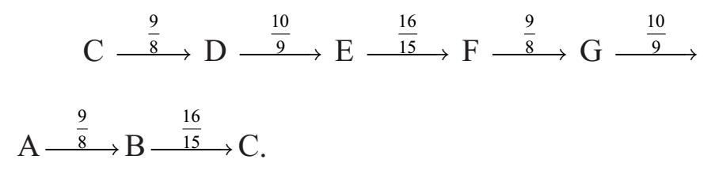
通过这种调音，C–E–G三和音是一个可爱的4∶5∶6比例的频率组合。但在这个系统中，从C到D的全音阶听起来不同于D到E的全音阶。
这两个系统（毕达哥拉斯和纯律）有另一个严重的问题。如果一组音乐家演奏完C大调的一首曲目，现在想要演奏用F调谱写的作品，就需要重新对乐器进行调音。这给鲁特琴的演奏者带来些许不便，对大键琴的演奏者来说就非常费劲了，而对于木管乐手而言则基本上是不可能的。
解决的办法是创建一个调音系统，使这个系统在所有音调中都能正常工作。这导致两个约束：（a）注意到一个八度音程必须具有2∶1的频率，并且（b）相隔半音阶的音符的频率比是相等的（例如，C和C＃的频率之比与C＃和D相同）。一个八度音程包含十二个半音阶：
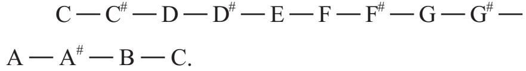
如果连续音符之间的频率比是某个数r［约束（b）］，并且经过一个八度使频率［约束（a）］加倍，那么我们肯定得到r12=2。这意味着
如果我们对乐器调音，使相邻音符之间的比率为，那么从一个音调切换到另一个音调时不需要重新调音。这种调音系统被称为平均律（equal temperament），是今天几乎普遍使用的系统。
不幸的是，是无理数。这意味着音符之间的频率比从来就不是一个整数（八度音除外）。C–G间隔的频率不是3∶2的比例。更进一步，这个比例约为1.4983，不过这个比例，不可否认的，非常接近1.5。
是无理数的证明几乎等同于是无理数的证明。请试着证明。
但是这听起来怎么样？目前，几乎所有的音乐都是在调节到等程音阶的乐器上演奏的，所以我们所听到的和声是我们所熟悉的。但是，让我们看看（字面意思）我们缺少什么。这是一个C大调和弦的波形。首先，音符的频率比例正好是4∶5∶6，其次音符的频率被指定为平均律。第一个波形看起来（且听起来！）比第二个更好。
平均律的优点在于曲目之间不需要重新对乐器进行调音。但是有一种乐器可以立即重新调音：人声。
无伴奏的合唱团体，如“理发店四重奏”不必使用等程音阶就可以“弯曲”他们的声音，以使频率间比率是小整数的比值。其结果是产生了奇妙的、共鸣的声音。